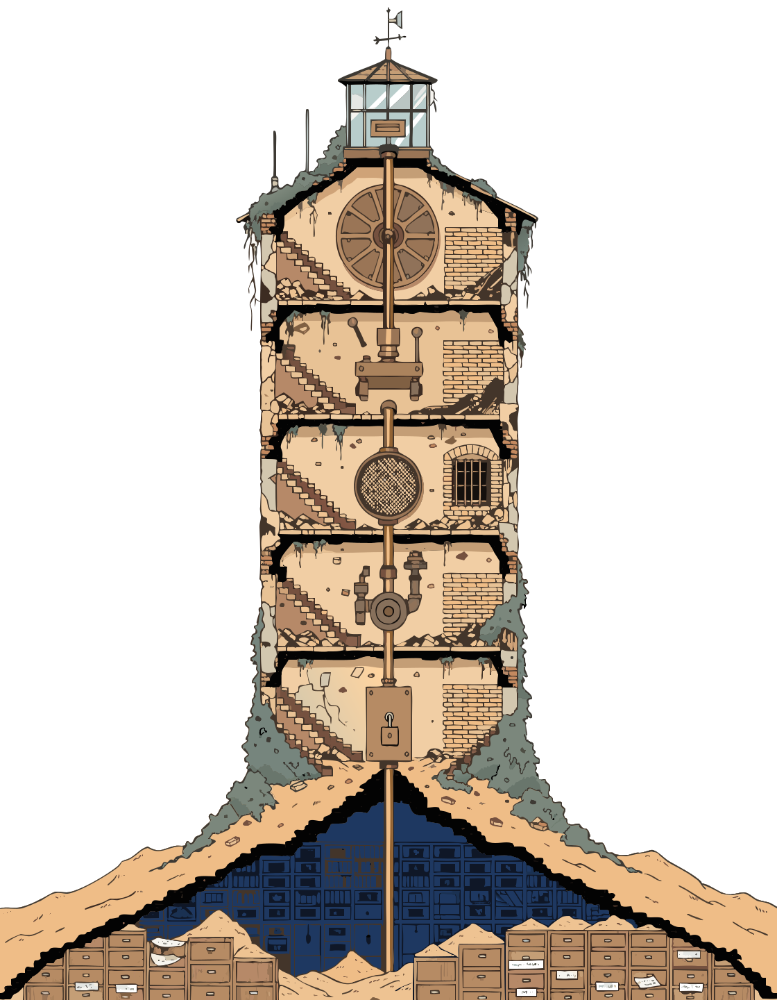

Case study · Agent architecturePublic space · Mayor's Office of MedellínDesigned and built 2025—2026
An Agent That Cannot Write SQLArchitecture of a municipal analytics agent
Capability as an architectural property — narrowing what the agent can express at every hop, so a correct answer never depends on it behaving well.
By Alejandro TabaresAssociate Director of Data & Technology, CORLIDECity of 2.5M residents
Every hop takes a capability away. What reaches the data can only ask, never construct.
MAT·036°15′N 75°34′W

One tube, five gatesThe stairs are gone and the doors are bricked. What reaches the archive can only ask.
IThe design problemThe dangerous output of an analytical agent is not a refusal. It is a number.
A wrong number does not look wrong
34 historical data standards had accumulated in one municipal office — the same vendor, the same place, the same procedure, recorded under a different column name each year by a different team. A director asks a reasonable question: how many vendors are working in this district? Answering it used to take an analyst about a week of reconciling spreadsheets.
An agent with a database connection can do it in seconds, and that is exactly the problem. Ask it to count people across tables that record one person many times, and it will write a join. If the join is wrong, the same person is counted five times. The agent does not hesitate, the query does not error, and the number that comes back is plausible — the right order of magnitude, formatted correctly, delivered with the fluency these systems are good at.
A hallucinated sentence gets caught by a reader. A hallucinated count gets put in a slide, presented to a council, and becomes policy.
So I did not try to teach the agent to join correctly. Prompting is advice, and advice is something a model can decline to follow — under an unusual question, a long context, or instructions that arrived inside the data it read. I removed its ability to express a join at all. The agent asks for a metric by a dimension; something else decides what SQL that means. The question can still be wrong. The arithmetic cannot.
IIWhat it cannot doNot rules it was given. Capabilities it does not have.
Four things the agent is structurally unable to do
Compose an unsafe aggregationIt cannot hand-write SQL. It names a metric and a dimension; the safe join path and the distinct-count semantics are declared once, in a contract, and compiled for it.
Hold a database credentialThe agent that talks to people has no connection to the warehouse at all. It hands the question to a separate, isolated workspace and waits for an answer.
Reach an identityEverything it can read was stripped of personal data before it existed. That guarantee is built one layer below and is the subject of its own case study.
Stand between a citizen and an answerNo model sits in the request path of any public or internal platform. Agents work at build time, on the tables those platforms later serve.
None of these are instructions. An instruction is a thing a system chooses to honor; each of the above is a thing it has no mechanism to attempt. That distinction is the entire design.
IIIThe shapeWide at the top, narrow in the middle. Everything passes through the waist.
An hourglass, not a pipeline
Questions arrive from many directions — a message in a chat, a scheduled report, an analyst at a terminal. They all converge on one narrow interface before anything touches data, and they fan back out afterwards. The narrow point is the design: it is the only place a question becomes a query, and it is the only place that has to be correct.
Every hop removes a capability; nothing below restores it
fig. 1 · production architecture · 2025—2026
WHO ASKS
Chat · scheduled task · analyst
Orchestration agentself-hosted, open weightsholds no credential
Analysis agentfrontier model, isolatednever sees an identity
THE ONLY INTERFACESemantic layercannot write a join
everything passes here
WHAT IT CAN REACH
Released layerread-only · anonymized
Its own workspacewrite, isolated
THE CITIZEN-FACING PATH · DETACHED
Browser
Read-only API
Tables
NO MODEL IN THIS PATH
1234567891011
WHO ASKS
1Chat · scheduled task · analyst
2Orchestration agentself-hosted, open weightsholds no credential
3Analysis agentfrontier model, isolatednever sees an identity
4THE ONLY INTERFACESemantic layercannot write a join
5everything passes here
WHAT IT CAN REACH
6Released layerread-only · anonymized
7Its own workspacewrite, isolated
THE CITIZEN-FACING PATH · DETACHED
8Browser
9Read-only API
10Tables
11NO MODEL IN THIS PATH
anatomy — structure is ruled, 2px, orthogonal · the only hand stroke is the circle on the waist, marking the one place that has to be correct · the lower panel is drawn detached because it touches no model
Narrowing
Each hop removes a capability rather than adding a rule. The agent facing people has no credential; the agent holding a credential has no identity data; the interface reaching the data cannot construct a query.
Delegation
The orchestrator passes a question, not a query, over a single narrow interface on a private network. It has nothing to escalate with, because it was never given anything.
Build time only
The lower panel is drawn detached on purpose. Agents help build the tables the platforms serve; they are never in the path between a request and its answer.
IVFour design decisionsEach buys back a failure mode that prompting cannot close.
Four decisions, and what each one is buying
DecisionRisk it addressesWhat would go wrong without it
Decision AA declarative layer is the only way to ask
Entities, dimensions and measures are declared once. The agent requests a metric by a dimension; the layer compiles the SQL, choosing the join path and the distinct-count semantics itself. Free SQL is not restricted — it is simply not part of the interface, for the agent or for the analyst.
Risk it addresses
Fan-out. One person appears on many source rows; a join along the wrong key multiplies them. This is the single most common analytical error in the domain, it produces no error message, and a fluent model will narrate the result with complete confidence.
Without it
Correctness would rest on the model getting a join right every time, forever, including on questions nobody anticipated. The counts are safe because the contract makes them safe, not because the agent was careful. A wrong question now returns a right-but-irrelevant number — a failure a human notices immediately.
Decision BTwo models, split by what they touch
Orchestration — chat, scheduling, carrying requests and replies — runs on a self-hosted open-weights model on infrastructure I control. Analysis runs on a frontier model, and only ever over the anonymized layer. The split follows the data, not the org chart.
Risk it addresses
The false choice between capability and sovereignty. Route everything to an external API and a public institution has sent citizen data somewhere it cannot audit. Route everything to a small local model and the analysis is not good enough to trust or to use.
Without it
The choice only dissolves because the anonymization boundary sits underneath: by the time the frontier model is reachable, there is no personal data left to send it. The risk was retired upstream, so the decision here is about analytical quality — while continuous orchestration stays in-house, where sovereignty and cost per token actually matter.
Decision CThe orchestrator delegates, it does not connect
The agent that reads messages, runs on a schedule and talks to people has no connection to the warehouse. It sends a question to an isolated workspace over one narrow interface on a private network, and receives an answer. The workspace holds the credential; the orchestrator holds the conversation.
Risk it addresses
Blast radius at the most exposed point. The orchestrator is the component that reads untrusted input all day — messages, documents, scheduled payloads. It is the likeliest thing in the system to be talked into something, and it is the thing an attacker would aim at.
Without it
A prompt-injected orchestrator holding a live credential is not a bad answer — it is a breach. Separated, the worst outcome of a fully compromised orchestrator is that it asks the workspace a stupid question and gets a well-formed answer back. There is nothing else it can do, because there is nothing else it has.
Decision DNo model in the request path
No platform — public or internal — calls a language model while serving a request. Between a browser and a figure there is only HTTP, a parameterized query and a cache, over tables computed in advance. Agents work at build time, helping produce and maintain those tables.
Risk it addresses
Four at once: an official indicator that differs between two identical requests; seconds of latency and orders of magnitude of cost where milliseconds and fractions of a cent will do; a prompt-injection surface facing the open internet; and a published figure that cannot be traced to anything but a sampling decision.
Without it
Municipal indicators are legal artifacts. A citizen and an auditor asking the same question must receive the same number, and must be able to trace it to a dated, materialized table. A probabilistic system cannot make that promise — and putting one in the request path would also hand every visitor a direct channel to the model.
VIn productionRunning against live municipal data for a city of 2.5M.
What it changed
240×faster on complex spatial questions
34data standards, one vocabulary
16anonymized tables it can see
0credentials held by the front agent
0models in any request path
[1]Turnaround measured against the prior manual process — one analyst-week of spreadsheet reconciliation to 10 min end to end. Execution accuracy is validated against a purpose-built 96-question benchmark, which doubles as the regression suite for the semantic layer.
VIWhat I'd probe nextThree things I would not defend as finished.
Where I think this is still weak
The narrow interface moves the problem rather than dissolving it. The agent can no longer compute the wrong number, but it can still choose the wrong metric or the wrong cut and present a technically correct answer to a question nobody asked. That failure is more visible than a bad join — which is the point — but I have no systematic way to detect it.
Expressiveness is a real cost, and I have not measured it. Every question the declarative layer cannot phrase is a question somebody answers another way — and the honest failure mode of a locked-down interface is that people route around it. I know the layer covers the questions the office actually asks. I do not know what it quietly made unaskable.
The layer covers what is asked; what it made unaskable is unmeasured
fig. 2 · membership, not counts · production use 2025—2026
what is asked
routed around,answered elsewhere
what is expressible
expressible,never requested
what the agentanswers
outside every set — questions nobody thought to ask, because the tool shaped them
123456
1what is asked
2routed around,answered elsewhere
3what is expressible
4expressible,never requested
5what the agentanswers
6outside every set — questions nobody thought to ask, because the tool shaped them
anatomy — the overlap is the part that gets reported · the region outside every set is the honest finding, and this design has no instrument for it
The separation is argued, not tested. I reason that a compromised orchestrator can do nothing but ask questions, because that is all it holds. I have never run a red-team exercise against it to find out whether that reasoning survives contact with somebody trying. How the system is measured is its own subject, and its own case study.
§On what this page omits
Note on disclosure
Deployment topology, network boundaries, credentials, role and schema names and the endpoint surface are omitted from this public version by design. This page argues that a system should be safe because of how it is built rather than because of what is known about it — but that is not a reason to publish the map.
The internal architecture report this is drawn from is available to hiring teams on request.